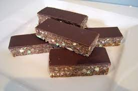

Chocolate surprise
Description
Chocolate cookie with a marshmallow surprise,
and a chocolate icing. Each cookie is topped with a pecan half.
Ingredients
- ½ cup butter, softened
- 1 cup white sugar
- 1 egg
- ¼ cup milk
- 1 teaspoon vanilla extract
- 1 ¾ cups all-purpose flour
- ⅓ cup unsweetened cocoa powder
- ½ teaspoon baking soda
- 18 large marshmallows, halved
- 1 cup white sugar
- ½ cup unsweetened cocoa powder
- ¼ cup milk
- 1 teaspoon vanilla extract
- ¼ cup butter
- 18 pecan halves
Steps
- Preheat oven to 350 degrees F (175 degrees C). Grease cookie sheets.
- In a large bowl, cream together 1/2 cup butter and 1 cup sugar until smooth.
Beat in the egg, then stir in the 1/4 cup milk and vanilla. Combine the flour,
1/3 cup cocoa and baking soda; stir into the creamed mixture.
Drop by heaping teaspoonfuls onto the prepared cookie sheet.
- Bake for 8 minutes in the preheated oven. Remove cookie sheet and
press marshmallow halves into the center of each cookie cut side down.
Return the cookies to the oven for an additional 2 minutes.
Remove from the oven and press lightly on the cookies to flatten slightly.
Remove cookies to wire racks to cool.
- To make the icing: In a small saucepan over medium heat, combine 1 cup sugar,
1/2 cup cocoa, 1/4 cup milk, 1 teaspoon vanilla and 1/4 cup butter.
Bring the mixture to a boil, stirring occasionally, and let boil for 1 minute.
Brush the cookies with the frosting then top each one with
a pecan half before the icing sets.
- slice into square shape